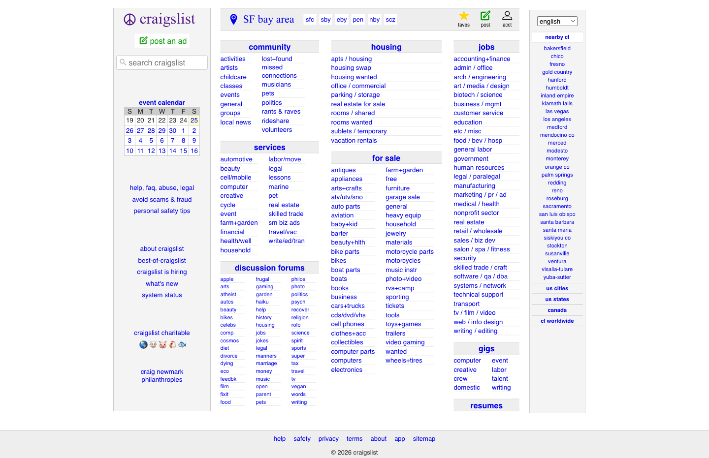
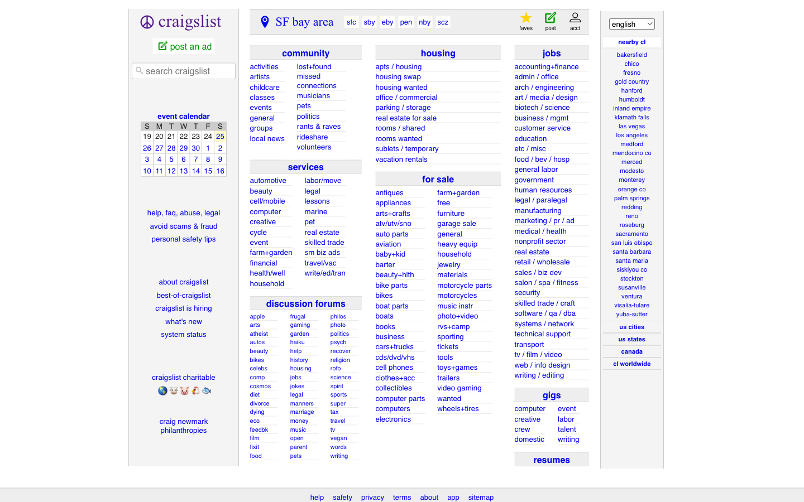
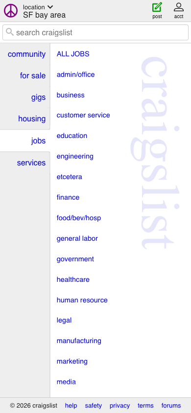

Craigslist is a platform that connects people within geographic communities to buy, sell, trade, hire, find housing, discover services, and engage in local discussions. The SF Bay Area homepage is the primary entry point for the entire product — it must route every user type (renter, job seeker, buyer, community browser) to the right destination with minimal friction.
The redesigned homepage replaces the current undifferentiated wall of 200+ hyperlinks with a hierarchically organized interface. Three core elements anchor the redesign: (1) a prominent, centered search bar; (2) six visually distinct category cards (community, housing, jobs, for sale, services, gigs) with subcategories surfaced through progressive disclosure; and (3) a streamlined location selector with optional geolocation, regional grouping, and search.
#post fails WCAG AA: 3.78:1 (threshold 4.5:1, not large text) — text #009900 on bg #ffffff. Must be remediated in all redesign directions.


Task-focused returning user
Already knows their category. Needs fast access to it and its subcategories. Values efficiency over discovery.
First-time or casual visitor
New to Craigslist. Needs discovery and orientation. The search bar is the primary anchor.
Multi-purpose browser
Uses Craigslist regularly for multiple needs. All 6 categories equally weighted — no single one dominates.
| Direction | Primary Metric | Proxy Signals |
|---|---|---|
| A | Reduced time-to-task — users reach target category within 1 click | Clicks before first category selection |
| B | Reduced bounce rate — users interact with at least one element before leaving | Session depth, exit rate from homepage |
| C | Secondary discovery — users who came for one category also engage with adjacent ones | Multi-category click rate per session |
| All | Search bar usage rate; location selector engagement; category card click-through rate | |
| Screen / Feature | Description |
|---|---|
| Homepage redesign | sfbay.craigslist.org at desktop (1440px primary viewport) |
| 6 Category cards | Community, housing, jobs, for sale, services, gigs — each a visually distinct card with progressive disclosure of subcategories |
| Prominent search bar | Centered, above or near the category cards — primary keyword entry point |
| Streamlined location selector | Replaces bare text link; optional geolocation, regional grouping with full labels (not bare abbreviations), and text search |
| Item | Reason |
|---|---|
| Internal pages (listing detail, search results, posting flow) | Homepage redesign only |
| Mobile optimization | Desktop-first — client-confirmed; mobile secondary |
| Back-end / functional implementation | Static HTML prototype output |
| Discussion forums (full section) | ★ Client Deferred — designer judgment: fold under "community" card |
| Resumes (full section) | ★ Client Deferred — designer judgment: fold under "jobs" card |
| Constraint | Value | Source |
|---|---|---|
| Device target | Desktop-first — 1440px primary viewport | Client-confirmed |
| Accessibility standard | WCAG AA minimum | Auto-elevated — existing #post contrast failure requires remediation |
| Output format | Static HTML prototype | Pipeline default |
| Mobile | Secondary (not a primary deliverable) | Client-confirmed |
| Direction | Reference | Pattern to draw from | Brand relationship |
|---|---|---|---|
| A | Airbnb | Prominent centered search + icon-labeled category cards | Modernize while referencing — purple as accent, neutral-first palette |
| B | Nextdoor | Community-first layout, neighborhood context in header | Extend the brand — purple and blue as primary palette anchors |
| C | eBay | Dense-but-organized category grid, marketplace hierarchy | Fresh design language — new palette; logo wordmark stays |
Clean / Utilitarian / Editorial
Generous whitespace, strong typographic hierarchy, minimal color. Content leads, chrome recedes.
Warm / Approachable / Community-First
Rounded corners (8–12px), warm neutrals, soft shadows. Friendly and local.
Bold / Structured / Modern Marketplace
Strong grid, confident type scale, distinct color zones per category.
| Role | Family | Size | Weight | Line Height |
|---|---|---|---|---|
| Logo | "Times New Roman", Times, serif | 31.3px | 500 | 42.3px |
| Location label | "Times New Roman", Times, serif | 22px | 400 | 16px |
| Body / links | "Open Sans", Helvetica, Arial, sans-serif | 16px | 400 | — |
| Section header (h3.ban) | "Open Sans", Helvetica, Arial, sans-serif | 16px | 700 | — |
| Sidebar utility | "Open Sans", Helvetica, Arial, sans-serif | 13.3px | 400 | — |
| Footer | "Open Sans", Helvetica, Arial, sans-serif | 12.8px | 400 | — |
| Element | Value |
|---|---|
| Sidebar width (#leftbar) | 196px |
| Center content width (#center) | 607.6px |
| Section header padding (h3.ban) | 2px 5px |
| Link padding | 0px 5px |
| Border radius (site-wide) | 0px |
| Box shadow (site-wide) | none |
| Component | Interaction Model | Confirmed States | Unconfirmed States |
|---|---|---|---|
| CategorySection (h3.ban + .cats) | Static | Default only | Hover, focus (not on current site) |
| LocationSelector (.location + .cl-subareas) | Click-driven (opens picker) | Default (text + pills) | Open/active picker state |
| SearchInput (input in #leftbar) | Click-driven | Default (resting) | Focus, active |
| HyperLink (all <a> in .cats) | Static | Default (#0000ee), Visited (#551a8b) | Hover (browser default only) |
| Component | Active State Treatment | Source |
|---|---|---|
| All hyperlinks | Visited: #551a8b (browser default) | url_extracted |
| No custom hover or active states present on current site | ||
| Element | Value | Treatment in redesign |
|---|---|---|
| Wordmark | "craigslist" — Times New Roman, 31.3px, weight 500, #551a8b | Preserved in all directions |
| Peace symbol | SVG icon prefix to wordmark | Preserved in all directions |
| Brand purple | #551a8b | Per direction: accent / primary / referenced (see §7) |
| Voice | Direct, functional, no marketing-speak | All copy follows existing site tone |
| Page tagline | "SF bay area jobs, apartments, for sale, services, community, and events" | Confirmed from live page |
Clean / Utilitarian / Editorial
Surface: white or off-white, no texture. Cards: subtle elevation (box-shadow). Palette: neutral-first, purple as single accent. Reference: Airbnb search entry.
Warm / Approachable / Community-First
Surface: warm neutral bg. Cards: soft rounded corners (8–12px), soft shadows. Palette: extends brand purple + blue with warm supporting tones. Reference: Nextdoor.
Bold / Structured / Modern Marketplace
Surface: clean white/light gray grid. Cards: color-zoned by category. Strong type scale, contemporary sans-serif. Fresh palette. Reference: eBay category grid.
| Adjective | Writing rule | Confirmed by |
|---|---|---|
| Direct | No filler words, no marketing superlatives | Existing site copy |
| Functional | Labels describe destination, not brand promise | Existing site copy |
| Local | Geographic and community context present in interface | "SF bay area" in header |
craigslist SF bay area community housing jobs for sale services gigs discussion forums resumes post an ad search craigslist
User needs to reach their target category and its subcategories within one interaction from the homepage.
User needs to understand what Craigslist offers and identify where to begin without being overwhelmed.
User needs equal-weight, fast access to any of the 6 primary categories without any one dominating the visual field.
The sfbay.craigslist.org homepage at 1440px uses a fixed 4-column layout with no border-radius or box-shadow anywhere on the page.
Logo "craigslist" wordmark (H1, Times New Roman, 31.3px, #551a8b) with peace symbol SVG → "post an ad" link (#009900 — WCAG FAIL) → basic search input (3px padding, no label) → "event calendar" H4 + weekly calendar grid → utility links (help, safety, scam avoidance) → about links → charity section with emoji icons.
3 sub-columns of 8 category sections. Each section: h3.ban header (#eeeeee bg, #dddddd 1px border-top, Open Sans 16px bold) + .cats two-column list of blue block links (16px, #0000ee, 0px 5px padding). Sections in layout order: community · services · discussion forums (50+ links, 3 cols) · housing · for sale · jobs · gigs · resumes.
"nearby cl" regional city list (bakersfield, chico, fresno, etc.) + "us cities / us states / canada / cl worldwide" sections.
Location button (Times New Roman 22px, #0000ee, no border/caret/icon) + sub-area pills: sfc, sby, eby, pen, nby, scz (bare abbreviations, no labels) + user action icons (faves, post, acct) + language selector dropdown (top right).
#eeeeee background, Open Sans 12.8px, 1px solid #cccccc border-top. Links: help, safety, privacy, terms, about, app, sitemap. Copyright: "© 2026 craigslist".

| Component | Observed States | Visual Treatment | Source |
|---|---|---|---|
| All <a> hyperlinks | Default | #0000ee, no underline, block or inline | url_extracted |
| All <a> hyperlinks | Visited | #551a8b (browser default visited color) | url_extracted |
| h3.ban category headers | Default (static, no interactive state) | #222222 on #eeeeee, 1px #dddddd border-top, 2px 5px padding | url_extracted |
| Location button (.location) | Default | Times New Roman 22px, #0000ee, no border/caret/icon | url_extracted |
| Search input | Default | 3px padding, no visible border, no focus ring | url_extracted |
| "post an ad" (#post) | Default | #009900 on #ffffff, 5px padding, inline — WCAG AA FAIL | url_extracted |
| Component | Active Treatment | Source |
|---|---|---|
| No custom hover, active, or focus states found on current site. Browser defaults only. | ||
| Field | Value | Source |
|---|---|---|
| Output format | HTML prototype | Pipeline default |
| Device targets | Desktop-first (1440px primary) | Client-confirmed |
| Accessibility | WCAG AA minimum | Auto-elevated from existing failure |
| Mobile | Secondary — not a primary deliverable | Client-confirmed |
| Engagement ID | craigslist_homepage-redesign_2026_04_25 | — |